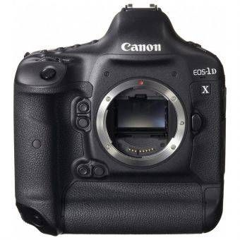
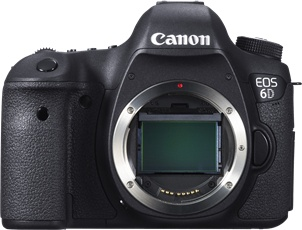
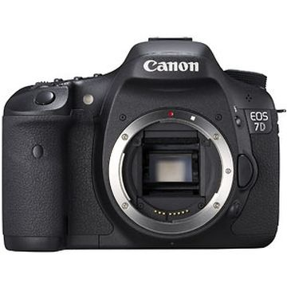

Welcome
Camera-Craz is the main site you want to be viewing when looking for a new camera. Camera-Craz will offer you a better way in searching for the new camera that will suite your needs without all the nonsense you will get from affiliation websites and corporate sites as well. Real users with real results! Take a look around the site, if you like what we have to offer please feel free to sign up. It takes no time and is completely free!
Featured Cameras

Newly designed 18.1 Megapixel full-frame CMOS sensor, 14-bit A/D conversion, wide range ISO setting 100-51,200 and next generation Dual DIGIC 5+ Image Processors for enhanced noise reduction and blazing processing speed.
New 61-Point High Density Reticular AF including 41 cross-type AF points with f/4.0 lens support including 5 dual diagonal AF points (sensitive to f/2.8), plus EOS iTR AF for accurate subject tracking.Learn More

Newly-designed 20.2 Megapixel Full-Frame CMOS sensor, and DIGIC 5+ Image Processor.
New 11-point AF with EV-3 sensitivity (center point).Learn More

18.0 Megapixel CMOS Sensor and Dual DIGIC 4 Image Processors for high image quality and speed.
ISO 100-6400 (expandable to 12,800) for shooting from bright to dim light.Learn More